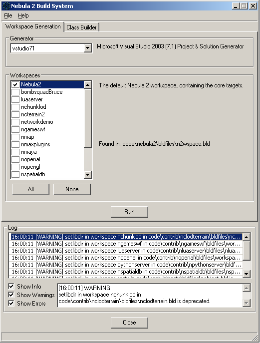
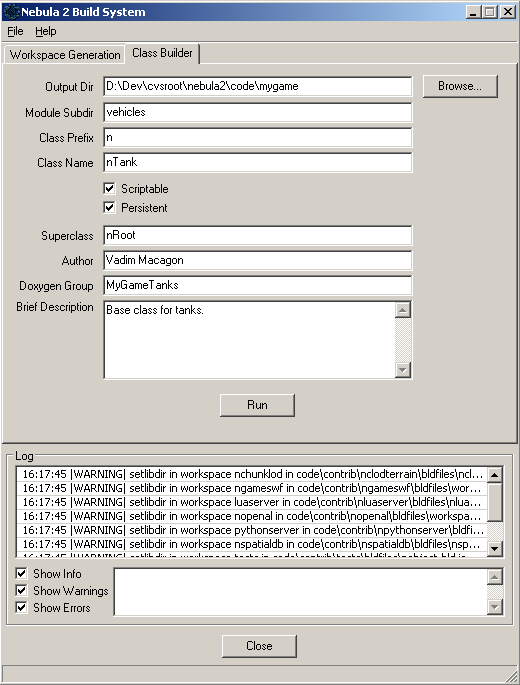
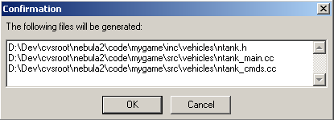

A long time ago in a land far away some good folks at Radon Labs wrote a multi-platform build system for Nebula 1 in TCL. Sometime later Nebula 2 came along and it was decided that the old build system could use a make over, and so the second generation build system was born. Unfortunately the 2nd generation build system was still written in TCL, and ran somewhat slowly for a rather long time before Bruce Mitchener optimized it. Still, one problem remained with the 2nd generation build system, it was written in TCL and as such - struck mortal fear into the heart of any man/woman/other that dared to maintain it. Only two brave souls dared to wonder into those dark woods, Sir Bruce Grumpalot and Sir Leaf Awayalot, but they grew weary of battle, life in general, and really were just quite fed up with it all. At the same time I grew tired of standing at the edge of the woods along with the rest of the village folk, and being pestered by a broad called Martha, who didn't look much like a broad I must say...
Anyway, I decided to rewrite the build system, but this time in Python so it could be more easily maintained by the village folk, and wxPython could be used to give it a nice looking GUI front-end. And so the 3rd generation build system was born, may it live long and prosper, unlike Martha who I'd love to see get lost in the woods, or fall off a cliff, I'm not picky really.
The only thing you need to get the GUI running is wxPython 2.5.x (or later), available at www.wxpython.org. Then just run "python update.py" in the root Nebula 2 directory (within a cmd prompt that has access to uuidgen.exe).
|  |
This tab is very straightforward to use, follow the steps below.
|
|  |
A brief description of each of the fields on this tab follows.
|
||||||||||||||||||||
|  | When you click on the Run button the dialog on the left will pop up. Confirm that the files that will be generated are going into the right directories click OK (the directories will be created if they don't already exist). |
Thanks go to...
© 2005 Vadim Macagon